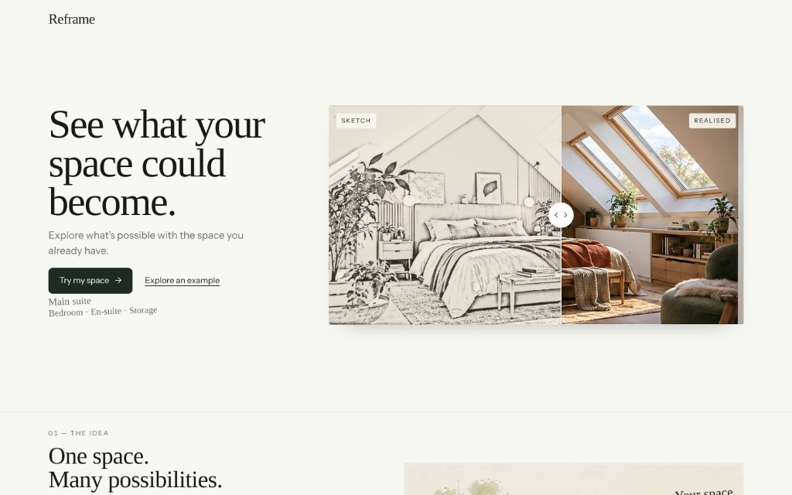
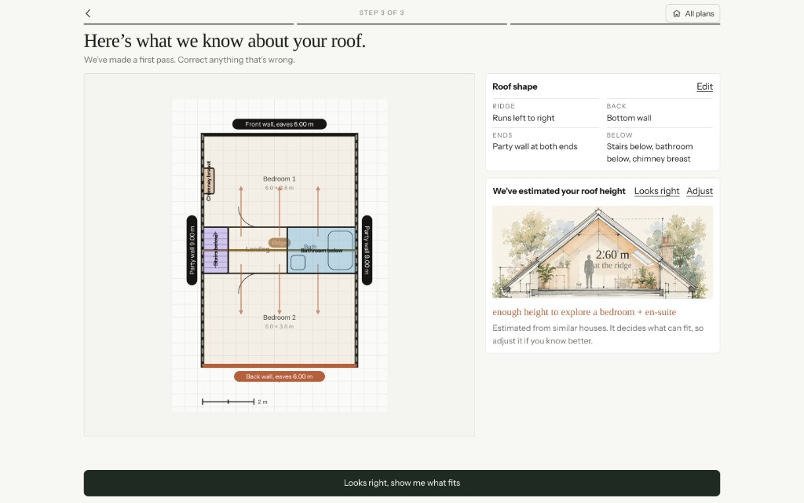
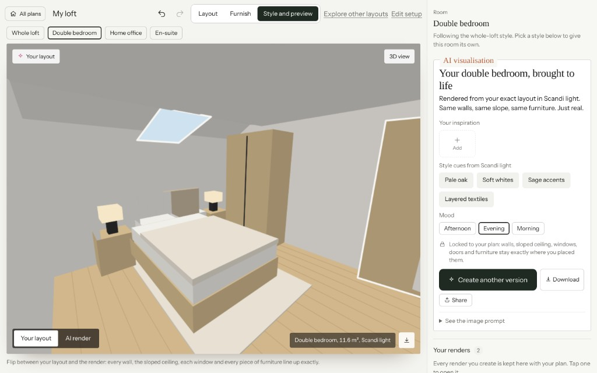
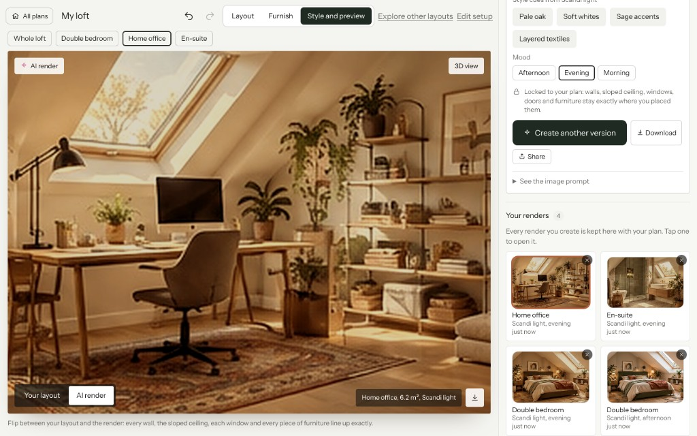

AI explorations.
A space to see how I’ve been dabbling in AI, using it and designing for it. Including this portfolio, vibe-coded with Cursor.
Side projects
-




01Define your spaceDescribe the loft, confirm roof shape and estimated ridge height, and mark what sits below—so every later option respects the real footprint.
02Explore layoutsAfter choosing a layout, move through the loft in 3D—switch between rooms, check furniture and headroom, and sense how each option uses the volume before you render.
03Visualise possibilitiesGenerate AI renders locked to your plan—flip between layout and render, adjust style and mood, and keep saved versions to compare.
Reframe: Making loft planning more tangible
An AI-powered product exploration into how homeowners could visualise what’s possible with their loft, grounded in the reality of their space.
AI prototyping Loft planning Spatial logic Rapid prototypingThe problem
Planning a loft conversion can be difficult to visualise before committing to costly professional advice. Generic AI image generators can create convincing interiors, but often ignore the physical constraints that determine what a space can realistically become.
I wanted to explore a different approach: a consumer-facing tool that helps people experiment with loft layouts early in the process, using their actual dimensions and spatial constraints to generate more grounded possibilities.
The approach
- Designing for exploration: Helping homeowners define their loft space, capture key dimensions and explore different layout options.
- AI-generated mockups: Exploring how AI could turn layout options into visual representations of potential spaces.
- Spatial logic: Developing an underlying model that accounts for dimensions, roof shape, stair positions and other constraints, keeping generated options grounded in the physical space.
- Rapid prototyping: Using Claude and Cursor to develop the experience and build out the underlying application.
Current status
Reframe is a work in progress. I’m developing the application and spatial modelling logic to explore how AI-generated visualisations can become more useful, realistic and constrained by the space they’re based on.
-
Stride: Designing a simpler path to financial independence
A side project inspired by my own frustration with spreadsheets, pension portals and compound interest calculators. Designed and tested a simpler way to understand progress towards financial independence and explore how today’s financial decisions shape future freedom.
AI prototyping Financial planning Behaviour change MobileWhat I did
Research & validation Used ChatGPT and Claude to explore the financial independence landscape, analyse existing tools, and validate the opportunity space.
AI-assisted product development Used Claude and Cursor to rapidly ideate, prototype and iterate concepts from initial ideas through to a functional mobile experience.
Product strategy Defined the value proposition, planning model and information architecture, focusing on trust, motivation and financial decision-making.
Interaction design Designed onboarding, projections and scenario modelling experiences to make complex financial concepts easier to understand and act on.
User research Conducted interviews with investors to validate assumptions, uncover trust barriers and refine the product direction through real user feedback.
Stride · AI prototyping
Work projects
-
AI Workflow Tool: designing the idea and how it lands
A Valtech hackathon project with a newly formed team; the entry took second place. The work focused on making AI genuinely useful in day-to-day workflows. Alongside the product, I used storytelling to help the audience feel empathy with the users.
Designing for AI Lovable PerplexityWhat I did
Usefulness Turned prompts into structured, actionable workflows.
Speed Shaped and prototyped side-of-desk using AI tools.
Experience Combined conversational input with clear UI outputs.
Narrative Created a short, trailer-style video to communicate the idea quickly.
Valtech · Hackathon
-
Google CCAI × Tide: conversational UX that completes journeys
Designed a conversational UX for SMB banking using Google CCAI, focused on helping users resolve tasks end-to-end in-channel. Built on structured, intent-led flows to ensure clarity, reliability, and control.
Conversational UX Dialogflow CCAIWhat I did
Context Intent-based (pre-LLM) conversational AI.
UX Designed dialogue patterns, prompts, and system responses.
Flows Structured journeys aligned to Tide’s product experience.
Trust Made intent, next steps, and escalation explicit.
Google & Tide · Conversational UX
-
Read case study
 BA & Fin. Ombudsman Designing for AI
BA & Fin. Ombudsman Designing for AIBA & FOS pitch
Designing for AI